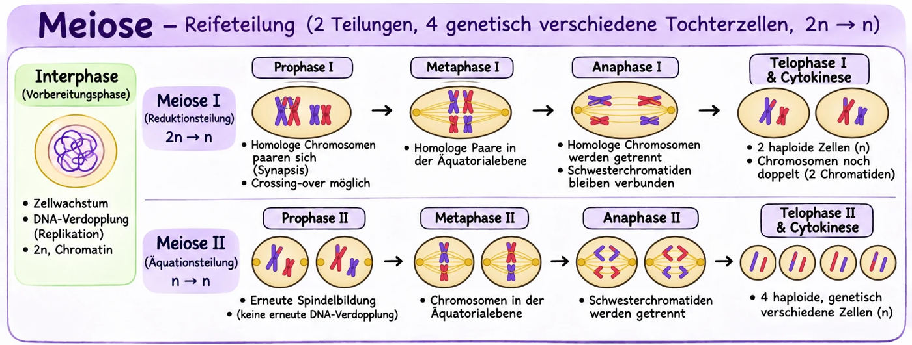

So nutzen Sie die Hilfen: Versuchen Sie es erst allein. Öffnen Sie dann Hilfe 1, danach Hilfe 2. Die Lösung dient zur Kontrolle – vergleichen Sie sie mit Ihrer eigenen Antwort und verbessern Sie diese im Hefter oder im PDF.
Aufgabe 1: Halbieren in zwei Schritten
- Überlegen Sie (gerne zu zweit), wie der diploide Chromosomensatz der Urkeimzelle in zwei Teilungsschritten auf einen haploiden Chromosomensatz mit Ein-Chromatid-Chromosomen reduziert werden kann! Geben Sie für die Zellen nach jeder Teilung an, ob sie haploid oder diploid sind und ob sie Ein- oder Zwei-Chromatid-Chromosomen enthalten! Nutzen Sie bei Bedarf die gestuften Hilfen.
Hilfe 1
Nach der ersten Kernteilung (Reifeteilung) entstehen zwei Zellen, nach der zweiten Reifeteilung vier Zellen. Die genetische Information dieser Zellen ist nicht identisch – ein Unterschied zur Mitose!
Hilfe 2
Die Urkeimzelle besitzt nach der Replikation einen diploiden Chromosomensatz mit Zwei-Chromatid-Chromosomen. Nach der 1. Reifeteilung besitzen beide Zellen einen haploiden Chromosomensatz. Nach der 2. Reifeteilung besitzen alle vier Zellen einen haploiden Chromosomensatz mit Ein-Chromatid-Chromosomen.
Lösung (erst nach eigenem Versuch öffnen!)
1. Teilung: Die homologen Chromosomen werden voneinander getrennt → 2 Zellen, haploid (n = 23), Zwei-Chromatid-Chromosomen.
2. Teilung: Die Schwesterchromatiden werden getrennt → 4 Zellen, haploid (n = 23), Ein-Chromatid-Chromosomen.
2. Teilung: Die Schwesterchromatiden werden getrennt → 4 Zellen, haploid (n = 23), Ein-Chromatid-Chromosomen.

Aufgabe 2: Der Ablauf der Meiose
- Ergänzen Sie das Schema (im Ausdruck): Zeichnen Sie die Chromosomen in alle Zellen ein, benennen Sie beide Teilungen mit dem Fachbegriff und geben Sie jeweils den Chromosomensatz (n oder 2n) an! Rot und blau stehen für die Chromosomen von Mutter und Vater.
- Zeichnen Sie den Verlauf der relativen DNA-Menge einer Urkeimzelle von der G1-Phase bis zur fertigen Keimzelle in das Diagramm ein (im Ausdruck)!
- Entscheiden Sie durch Ankreuzen, ob die Aussagen richtig oder falsch sind, und korrigieren Sie falsche Aussagen eindeutig!
- Zeichnen Sie eine Zelle mit drei homologen Chromosomenpaaren (2n = 6) in der Anaphase I und beschriften Sie vier Strukturen! Kennzeichnen Sie mütterliche und väterliche Chromosomen farbig.
- Spielen Sie im Meiose-Labor den Ablauf der Meiose mit zwei Chromosomenpaaren Schritt für Schritt durch!
Hilfe 1
a) Nach der ersten Teilung liegt von jedem Paar nur noch ein Chromosom vor – es besteht aber noch aus zwei Chromatiden. Reduktion = Verringerung, Äquation = Gleichmachen. b) Startwert G1 = 2. Wodurch steigt die DNA-Menge, durch welche Teilungen sinkt sie? c) Unterscheiden Sie genau: In der Reduktionsteilung werden homologe Chromosomen getrennt, in der Äquationsteilung Schwesterchromatiden.
Hilfe 2
b) Die DNA-Menge halbiert sich zweimal: am Ende der Reduktionsteilung und am Ende der Äquationsteilung. Dazwischen gibt es keine Replikation. d) Anaphase I: Zu jedem Pol wandern drei Zwei-Chromatid-Chromosomen – von jedem Paar eines (zufällig mütterlich oder väterlich).
Lösung (erst nach eigenem Versuch öffnen!)
a) Urkeimzelle: 2n. 1. Teilung = Reduktionsteilung : Die homologen Chromosomen werden getrennt; jede Tochterzelle erhält von jedem Paar ein Zwei-Chromatid-Chromosom (z. B. großes rotes + kleines blaues) → n. 2. Teilung = Äquationsteilung : Die Schwesterchromatiden werden getrennt; jede Keimzelle erhält zwei Ein-Chromatid-Chromosomen → n. Beispiel für eine richtige Lösung (linke Hälfte der Abbildung):
b) siehe Diagramm (2 → 4 in der S-Phase, 4 → 2 am Ende der Reduktionsteilung, 2 → 1 am Ende der Äquationsteilung).
c) 1. falsch – vor der Äquationsteilung findet keine Replikation statt. 2. richtig. 3. richtig. 4. falsch – in der Anaphase II werden die Schwesterchromatiden getrennt (homologe Chromosomen in der Anaphase I). 5. falsch – die vier Zellen sind genetisch verschieden (siehe Text; die Ursachen lernen Sie in Modul 4 kennen).
d) Zeichnung: Zelle mit Spindelapparat; an jedem Pol drei Zwei-Chromatid-Chromosomen unterschiedlicher Größe (je eines aus jedem homologen Paar, Farben gemischt); Beschriftung z. B. Zwei-Chromatid-Chromosom, Centromer, Spindelfaser, Zellpol.
b) siehe Diagramm (2 → 4 in der S-Phase, 4 → 2 am Ende der Reduktionsteilung, 2 → 1 am Ende der Äquationsteilung).
c) 1. falsch – vor der Äquationsteilung findet keine Replikation statt. 2. richtig. 3. richtig. 4. falsch – in der Anaphase II werden die Schwesterchromatiden getrennt (homologe Chromosomen in der Anaphase I). 5. falsch – die vier Zellen sind genetisch verschieden (siehe Text; die Ursachen lernen Sie in Modul 4 kennen).
d) Zeichnung: Zelle mit Spindelapparat; an jedem Pol drei Zwei-Chromatid-Chromosomen unterschiedlicher Größe (je eines aus jedem homologen Paar, Farben gemischt); Beschriftung z. B. Zwei-Chromatid-Chromosom, Centromer, Spindelfaser, Zellpol.
Aufgabe 3: Spermatogenese und Oogenese
- Vergleichen Sie Spermatogenese und Oogenese, indem Sie die Tabelle ausfüllen!
- Stellen Sie eine Hypothese zur biologischen Bedeutung der ungleichen Plasmaverteilung bei der Oogenese und der großen Anzahl an Spermien auf!
Hilfe 1
Lesen Sie den Text zweimal: einmal nur für den Mann, einmal nur für die Frau. Tragen Sie die Stichworte direkt in die Tabelle ein.
Hilfe 2
Hypothese: Wer versorgt den frühen Embryo mit Nährstoffen und Zellbestandteilen? Wie wahrscheinlich ist es, dass ein einzelnes Spermium die Eizelle erreicht?
Lösung (erst nach eigenem Versuch öffnen!)
Ort: Hoden | Eierstock. Zeitraum: ab der Pubertät lebenslang | Beginn vor der Geburt, Arrest in der Prophase I, Abschluss der Reduktionsteilung vor dem Eisprung, Äquationsteilung erst nach Eindringen des Spermiums; bis zu den Wechseljahren. Anzahl: 4 Spermien | 1 Eizelle (+ 2–3 Polkörperchen). Plasma: gleichmäßig | ungleichmäßig. Größe: klein, gleich groß | große Eizelle.
Hypothese: Die große Eizelle enthält genügend Nährstoffe und Zellbestandteile, um den frühen Embryo bis zur Einnistung zu versorgen. Die große Zahl kleiner, beweglicher Spermien erhöht die Wahrscheinlichkeit, dass ein Spermium die Eizelle erreicht und befruchtet.
Hypothese: Die große Eizelle enthält genügend Nährstoffe und Zellbestandteile, um den frühen Embryo bis zur Einnistung zu versorgen. Die große Zahl kleiner, beweglicher Spermien erhöht die Wahrscheinlichkeit, dass ein Spermium die Eizelle erreicht und befruchtet.
Basiswissen: Eizelle und Spermium
- Erläutern Sie am Beispiel von Eizelle und Spermium das Basiskonzept Struktur und Funktion!
Hilfe 1
Im Blatt „Basiskonzepte“ steht: Zwischen dem Bau einer Struktur und ihrer Funktion besteht ein Zusammenhang. Welche Funktion haben Eizelle und Spermium jeweils?
Hilfe 2
Eizelle: Was braucht der Embryo in den ersten Tagen? Spermium: Was muss es leisten, um die Eizelle zu erreichen, und woher kommt die Energie dafür?
Lösung (erst nach eigenem Versuch öffnen!)
Eizelle: Sie ist groß und enthält viel Zellplasma mit Nährstoffen. Damit versorgt sie den frühen Embryo, bis er sich in der Gebärmutter einnistet (deshalb wird das Zellplasma in der Oogenese ungleich verteilt).
Spermium: Es ist klein und besitzt eine Geißel zur aktiven Fortbewegung. Die vielen Mitochondrien im Mittelstück liefern das ATP für die Bewegung. Der Bau passt also jeweils zur Funktion.
Spermium: Es ist klein und besitzt eine Geißel zur aktiven Fortbewegung. Die vielen Mitochondrien im Mittelstück liefern das ATP für die Bewegung. Der Bau passt also jeweils zur Funktion.
Aufgabe 4: Mitose und Meiose im Vergleich
- Mitose, Meiose oder beide? Ordnen Sie die Aussagen durch Ankreuzen zu!
- Die Äquationsteilung wird oft als „mitoseähnlich“ bezeichnet. Erklären Sie diese Bezeichnung und nennen Sie einen wesentlichen Unterschied zur Mitose!
Hilfe 1
Gehen Sie jede Aussage einzeln durch und überlegen Sie: Passiert das bei der Bildung von Körperzellen, von Keimzellen oder bei beiden?
Hilfe 2
„Beide“ trifft auf drei Aussagen zu. b) Was passiert in der Äquationsteilung mit den Chromatiden? Und wie viele Chromosomen haben die Zellen zu Beginn der Äquationsteilung?
Lösung (erst nach eigenem Versuch öffnen!)
a) Replikation vorher: beide. Paarung homologer Chromosomen: Meiose. Zwei identische Tochterzellen: Mitose. Haploide Zellen: Meiose. Trennung der Schwesterchromatiden: beide (Mitose; Äquationsteilung). Wundheilung: Mitose. Vier Zellen aus einer Ausgangszelle: Meiose. Metaphase mit Anordnung in der Äquatorialebene: beide.
b) Wie bei der Mitose werden in der Äquationsteilung die Schwesterchromatiden getrennt, aus Zwei-Chromatid- werden Ein-Chromatid-Chromosomen. Unterschiede: Die Zellen sind zu Beginn der Äquationsteilung bereits haploid; vorher findet keine Replikation statt; die Tochterzellen sind genetisch verschieden.
b) Wie bei der Mitose werden in der Äquationsteilung die Schwesterchromatiden getrennt, aus Zwei-Chromatid- werden Ein-Chromatid-Chromosomen. Unterschiede: Die Zellen sind zu Beginn der Äquationsteilung bereits haploid; vorher findet keine Replikation statt; die Tochterzellen sind genetisch verschieden.
Wahlaufgabe W1: Fehler im Text
- Verbessern Sie alle fachlichen Fehler im Text!
Hilfe 1
Es gibt sechs Fehler. Prüfen Sie jeden Satz einzeln.
Hilfe 2
Achten Sie auf: Centromer (Protein-DNA-Struktur), homolog ≠ identisch, diploid = zwei Chromosomensätze, Keimzellen, Mitose, Anzahl der Autosomen.
Lösung (erst nach eigenem Versuch öffnen!)
1) Chromosomen bestehen aus einem oder zwei Chromatiden; die Chromatiden sind am Centromer verbunden (keine Kohlenhydrat-Klammer). 2) Homologe Chromosomen tragen Informationen für die gleichen Merkmale, können aber unterschiedliche Varianten enthalten. 3) Diploid bedeutet, dass zwei Chromosomensätze vorliegen. 4) Keimzellen sind haploid. 5) Die Tochterzellen der Mitose sind diploid (mit Ein-Chromatid-Chromosomen). 6) Eine Körperzelle des Mannes besitzt 44 Autosomen und 2 Gonosomen (X und Y), insgesamt 46 Chromosomen.
Wahlaufgabe W2: Meiose bei polyploiden Zellen
- Entscheiden und begründen Sie, ob eine reguläre Meiose bei einer tetraploiden bzw. bei einer pentaploiden Urkeimzelle möglich ist! Geben Sie den Chromosomensatz der Keimzellen an, wo eine reguläre Meiose möglich ist!
Hilfe 1
In der Reduktionsteilung muss jedes Chromosom einen homologen Partner finden, damit gleichmäßig verteilt werden kann.
Hilfe 2
Tetraploid: Wie viele Homologe pro Chromosomentyp? Lassen sie sich gleichmäßig auf zwei Zellen aufteilen? Und bei fünf?
Lösung (erst nach eigenem Versuch öffnen!)
Tetraploid (4n): Von jedem Chromosomentyp liegen 4 Homologe vor; sie können sich paaren und gleichmäßig verteilt werden (2 + 2) → reguläre Meiose möglich, Keimzellen diploid (2n) mit Ein-Chromatid-Chromosomen. Pentaploid (5n): 5 Homologe lassen sich nicht gleichmäßig aufteilen (2 + 3) → keine reguläre Meiose, die Keimzellen wären aneuploid.
Wahlaufgabe W3: die DNA-Masse
- Ermitteln Sie die DNA-Masse nach der S-Phase, nach der Reduktionsteilung und nach der Äquationsteilung! Geben Sie zu jedem Stadium den Chromosomensatz und die Zustandsform der Chromosomen an und begründen Sie Ihre Angaben!
Hilfe 1
Was passiert in der S-Phase mit der DNA? Wie viele DNA-Doppelstränge enthält ein Zwei-Chromatid-Chromosom? Was wird in der Reduktionsteilung getrennt, was in der Äquationsteilung?
Hilfe 2
In der S-Phase wird die DNA repliziert (DNA-Masse ×2). In der Reduktionsteilung werden die homologen Chromosomen getrennt (Chromosomensatz und DNA-Masse ÷2), in der Äquationsteilung die Schwesterchromatiden (DNA-Masse ÷2, Chromosomensatz bleibt n).
Lösung (erst nach eigenem Versuch öffnen!)
G1-Phase: 7 pg · 2n · Ein-Chromatid-Chromosomen (Ausgangswert).
nach der S-Phase: 14 pg · 2n · Zwei-Chromatid-Chromosomen – die DNA wurde repliziert, jedes Chromosom besteht aus zwei identischen Chromatiden; die Anzahl der Chromosomen bleibt gleich.
nach der Reduktionsteilung: 7 pg · n · Zwei-Chromatid-Chromosomen – die homologen Chromosomen wurden auf zwei Zellen verteilt; jede Zelle erhält nur ein Chromosom jedes Paares, die Chromatiden bleiben verbunden.
nach der Äquationsteilung (Spermium): 3,5 pg · n · Ein-Chromatid-Chromosomen – die Schwesterchromatiden wurden getrennt; das Spermium enthält einen einfachen Chromosomensatz aus Ein-Chromatid-Chromosomen.
nach der S-Phase: 14 pg · 2n · Zwei-Chromatid-Chromosomen – die DNA wurde repliziert, jedes Chromosom besteht aus zwei identischen Chromatiden; die Anzahl der Chromosomen bleibt gleich.
nach der Reduktionsteilung: 7 pg · n · Zwei-Chromatid-Chromosomen – die homologen Chromosomen wurden auf zwei Zellen verteilt; jede Zelle erhält nur ein Chromosom jedes Paares, die Chromatiden bleiben verbunden.
nach der Äquationsteilung (Spermium): 3,5 pg · n · Ein-Chromatid-Chromosomen – die Schwesterchromatiden wurden getrennt; das Spermium enthält einen einfachen Chromosomensatz aus Ein-Chromatid-Chromosomen.
Sichern: Fachsprache und Denkfallen
Erst selbst erklären, dann vergleichen. Übernehmen Sie die Begriffe in Ihr Glossar.
Lösung: Fachbegriffe
- Urkeimzelle: Diploide Zelle in Hoden oder Eierstock, aus der durch Meiose Keimzellen entstehen.
- Reduktionsteilung: Erste Reifeteilung: Homologe Chromosomen werden getrennt, die Chromosomenzahl wird halbiert (2n → n).
- Äquationsteilung: Zweite Reifeteilung: Schwesterchromatiden werden getrennt, die Chromosomenzahl bleibt gleich (n → n).
- Tetrade: Paar homologer Zwei-Chromatid-Chromosomen in der Prophase I (vier Chromatiden).
- Spermatogenese: Bildung der Spermien im Hoden; aus einer Urkeimzelle entstehen vier Spermien.
- Oogenese: Bildung der Eizellen im Eierstock; aus einer Urkeimzelle entstehen eine Eizelle und Polkörperchen.
- Polkörperchen: Kleine Zelle mit wenig Zellplasma, die bei der Oogenese entsteht und zugrunde geht.
Lösung: Denkfallen
- „Vor der Äquationsteilung wird die DNA erneut repliziert.“ – falsch – Zwischen Reduktionsteilung und Äquationsteilung findet keine Replikation statt.
- „In der Anaphase I werden die Schwesterchromatiden getrennt.“ – falsch – In der Anaphase I werden die homologen Chromosomen getrennt, die Schwesterchromatiden erst in der Anaphase II.
- „Aus einer Urkeimzelle der Frau entstehen vier Eizellen.“ – falsch – Es entstehen eine Eizelle und (bis zu) drei Polkörperchen, weil das Zellplasma ungleich verteilt wird.
Fallakte · Befund Kapitel 3
Familie Sommer · Ein Karyogramm für das Baby – Kapitel 3: „Eine Eizelle, so alt wie ich?“
- Chromosomenzahl in Eizelle und Spermium (mit Fachbegriff)
- In welcher Phase ruhen die Eizellen bis zur Pubertät?
- Unterschied zwischen Spermatogenese und Oogenese (Zahl der Keimzellen pro Urkeimzelle)
- Vermutung: Warum könnte das Alter der Eizelle eine Rolle spielen?
Tipp
Lesen Sie das Kapitel 3 der Fallakte noch einmal und suchen Sie in den Pflichtaufgaben dieses Moduls die passenden Fachbegriffe.
Lösung (erst nach eigenem Versuch öffnen!)
- Jeweils 23 Chromosomen, also ein einfacher (haploider) Chromosomensatz (n = 23).
- In der Prophase der ersten Reifeteilung.
- Spermatogenese: Aus einer Urkeimzelle entstehen vier gleich große Spermien, lebenslang ab der Pubertät. Oogenese: Aus einer Urkeimzelle entstehen eine große Eizelle und (bis zu) drei kleine Polkörperchen, die zugrunde gehen; die Anlage erfolgt vor der Geburt.
- Die Eizellen verharren jahrzehntelang in der Reduktionsteilung. Je länger diese Pause dauert, desto eher kann die Trennung der homologen Chromosomen fehlerhaft verlaufen (z. B. weil der Zusammenhalt der Chromosomen nachlässt).